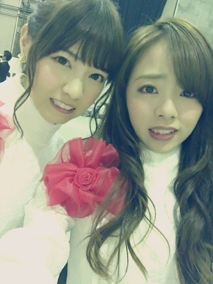
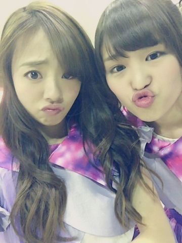

| 2016/02 07 Sun | ～14th選抜発表～ 川村まひろカナ？笑 |
こんにちわ～^ ^♡♡
川村まひろです.＊
今日も寒いですね...
皆さん首元はあったかくしましょうね.

先ずはじめに，お待たせしました選抜発表blog。。先日14th選抜発表がOAされました！
結果，選抜メンバーではなかったんですが.
皆のblogを読んでいると思いを素直にぶつけていて... すごく共感できるし，皆の気持ちが痛い程わかる. 涙が出てきたなぁ...。
私は皆に辛い気持ちになってほしくないなぁ..
皆が笑ってる，そんな場所になってほしいな。。 世界が平和になりますよーーーにっ。。♡
いぇい♡♡ 皆わらえっ。。
メンバーのblogにも書いてあったんだけど、
歌がうまいとか，ダンスがうまいとか，可愛いとか，喋れるとか，，そういったことを基準としていないから，何をどうしたらいいのかな？って、、きっとメンバー皆悩んでると思う.
歌がうまいとか，ダンスがうまいとか，可愛いとか，喋れるとか，，そういったことを基準としていないから，何をどうしたらいいのかな？って、、きっとメンバー皆悩んでると思う.
私も色んなことを言われ続け，自分の中で正解が分からなくなり葛藤し続けてた日々もありました。正直本当に辛かったかな... このままやとおかしくなっちゃうって思ってた. （過去形だよ！今は大丈夫だよ♡）
でも私はちゃんとした答えを見つけたので，選抜とかアンダーっていう事だけに惑わされず自分の良い所を伸ばし頑張りますね(#^.^#)？♡♡
友達にまひろは正しいから「自分の生き方に自信持て」と言われました.笑 めっちゃ心に響きました...♡ぇへへ
いつも応援してくださっているファンの人達のためにも自分のためにも，もっともっとメディアには出たいな♡♡♡
私は毎日毎日楽しくポジティブに生きています(#^.^#) 乃木坂の活動、楽しいって思ってます♡
平和主義者 川村まひろでした♡
同じ顔してみた.ぇへへ

将棋娘のたこちゅー顔。
私もしてみた。笑

ぁ、告知告知っ♡♡
只今発売中 「TOPYELL」
10日発売の「MARQUEE」
チェックの方よろしくお願いします*\(^o^)/*
トップエールは私，永島，ゆうり
マーキーの方は 川後と‼︎♡♡
という事で，またblog更新します.＊
コメント(610)
2016/02/07 14:54